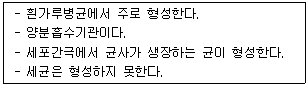

식물보호산업기사 (2014-09-20 기출문제)
1과목: 식물병리학
1. 식물병원의 종류 중 비세포성 병원은?
- 파이토플라스마
- 진균류
- 선충
- 바이로이드
(정답률: 69%)

2. 식물병의 진단방법 중 면역학적 진단방법에 속하지 않는 것은?
- 응집과 침강 반응
- 면역확산법
- ELISA법
- 현미경관찰법
(정답률: 84%)
3. 병원균의 중간기주가 향나무인 병은?
- 잣나무 털녹병
- 밀 줄기녹병
- 소나무 혹병
- 사과나무 붉은별무늬병
(정답률: 75%)
4. 다음은 병원균의 기관 중 무엇에 대한 설명인가?

- 버섯
- 흡기
- 균핵
- 후벽포자
(정답률: 73%)
5. 벼에서는 문제가 되지 않는 병은?
- 도열병
- 녹병
- 잎집무늬마름병
- 오갈병
(정답률: 94%)
6. 다음 병원체 중 크기가 가장 작은 것은?
- 파이토플라스마
- 재선충
- 곰팡이
- 겨우살이
(정답률: 93%)
7. 식물병원 곰팡이(fungi)의 특징이 아닌 것은?
- 균사를 갖는다.
- 포자를 갖는다.
- 핵을 갖는다.
- 엽록소를 갖는다.
(정답률: 90%)
8. 질소비료를 과용하면 여러 가지 병의 발생을 촉진한다. 질소비료 과용이 발병에 미치는 역할을 바르게 설명한 것은?
- 병원(病原)
- 원인(原因)
- 주인(主因)
- 유인(誘因)
(정답률: 79%)
9. 곰팡이에 의해서 발생한 병의 표징이 아닌 것은?
- 포자퇴
- 유주자낭
- 균핵
- 뿌리털
(정답률: 86%)
10. 이종기생균으로 옳은 것은?
- 고추 탄저병균
- 잣나무 털녹병균
- 아스파라거스 녹병균
- 사과나무 불마름병균
(정답률: 85%)
11. 판별품종은 어디에 이용되는가?
- 농작물 수량의 기준 판별에 이용된다.
- 지역적응성 여부의 측정에 이용된다.
- 병원균의 레이스 판별에 이용된다.
- 이들 모두가 해당된다.
(정답률: 93%)
12. 화학적 방제에 관한 설명으로 틀린 것은?
- 효과가 좋아도 연용할 경우 저항성을 갖게 된다.
- 작물보호제는 대상 병균과 적정한 작물이 한정되어 있어, 이를 벗어나는 경우에는 효과가 낮다.
- 예방 또는 치료를 위한 효과가 비교적 정확하고 신속하다.
- 살포량과 농도를 늘릴 경우 특히 효과가 크다.
(정답률: 88%)
13. 불완전균류란?
- 균사의 형성이 불완전한 균류
- 무성세대가 밝혀지지 않은 균류
- 유성세대가 밝혀지지 않은 균류
- 기주범위가 밝혀지지 않은 균류
(정답률: 78%)
14. 육안으로 진단이 가장 용이한 식물병은?
- 뿌리썩음병
- 줄기마름병
- 흰가루병
- 점무늬병
(정답률: 92%)
15. 비전염성 식물병이 아닌 것은?
- 토양의 과습
- 통기성 불량
- 파이토플라스마
- 양분의 불균형
(정답률: 83%)
16. 토양전염성 병해의 생물적 방제를 위해 사용되는 세균이 아닌 것은?
- Agrobacterium radiobacter K84
- Bacillus subtilis
- Erwinia carotovora
- Pseudomonas fluorescens
(정답률: 65%)
17. 잿빛곰팡이병, 흰가루병 그리고 녹병의 전염방법은?
- 공기전염
- 충매전염
- 토양전염
- 수매전염
(정답률: 75%)
18. 대추나무 빗자루병의 치료방법으로 옳은 것은?
- 옥시테트라사이클린계 항생제를 수간주사한다.
- 침투성 살균제를 수간주사한다.
- 농용마이신을 엽면 처리한다.
- 피해지에 봉지를 씌워 병균의 전파를 방지한다.
(정답률: 92%)
19. 표징이 나타나는 병은?
- 포도 흰가루병
- 감자 빗자루병
- 과꽃 누른오갈병
- 감자 바이러스병
(정답률: 87%)
20. 대기오염물질 중 PAN에 대한 설명으로 옳은 것은?
- 자동차 배기가스에 섞여 배출된다.
- 주로 뿌리를 통해 흡수된다.
- 잎의 색을 은색으로 탈색시킨다.
- 페튜니아 등 화훼식물에만 피해를 입힌다.
(정답률: 81%)
2과목: 농림해충학
21. 불완전변태를 하는 해충은?
- 나방류
- 갑충류
- 파리류
- 진딧물류
(정답률: 84%)
22. 곤충의 체벽에 관한 설명으로 틀린 것은?
- 체벽은 표피층, 표피세포층, 기저막으로 구성되어 있다.
- 체벽을 통한 가스교환도 가능 하지만 전체호흡량에 비해 양은 무척 작다.
- 체벽이 탈피될 때는 전체의 1/3정도만 허물로 벗고 나머지는 소화 흡수되어 재활용된다.
- 곤충의 체벽은 배자발육 단계에서 내배엽에서 분화되었다.
(정답률: 63%)
23. 일반적으로 곤충의 가운데 가슴마디에 있는 기문(spiracle) 수는?
- 1쌍
- 2쌍
- 8쌍
- 10쌍
(정답률: 58%)
24. 곤충 암컷의 생식기관이 아닌 것은?
- 알집(卵巢)
- 수란관(輸卵管)
- 수정낭(受精囊)
- 수정관(輸精管)
(정답률: 69%)
25. 배를 가해하는 가루깍지벌레의 입 모양은?
- 씹는 입
- 핥는 입
- 찔러빠는 입
- 물어찢어빠는 입
(정답률: 72%)
26. 벼 줄무늬잎마름병을 매개하는 해충은?
- 애멸구
- 벼멸구
- 번개매미충
- 끝동매미충
(정답률: 84%)
27. 곤충의 앞날개가 붙어있는 부위는?
- 앞가슴
- 가운데가슴
- 뒷가슴
- 가슴등판
(정답률: 80%)
28. 곤충 더듬이의 팔굽마디에 있는 존스턴기관(johnston’s organ)이 담당하는 기능은?
- 냄새를 맡는다.
- 성호르몬을 발산한다.
- 소리를 감지한다.
- 온도를 감지한다.
(정답률: 82%)
29. 우리나라에서 월동하지 못하는 해충은?
- 벼멸구
- 끝동매미충
- 애멸구
- 번개매미충
(정답률: 86%)
30. 해충의 발생예찰에 대한 설명으로 틀린 것은?
- 발생예찰에는 발생시기의 예찰, 발생량의 예찰, 피해량의 예찰, 방제여부의 예찰 등이 있다.
- 화학적 방제를 위해서는 발생예찰이 필요하지 않고 농민이 편리한 시기에 약제를 살포하기만 하면 된다.
- 발생예찰을 위한 조사로는 정점조사와 순회조사가 있다.
- 물을 담은 수반에 날아들어오는 해충을 조사하는 방법을 수반조사법이라고 한다.
(정답률: 94%)
31. 곤충에서 실제로 조직세포와 가스를 교환하는 곳은?
- 기문(氣門)
- 기관간(氣管幹)
- 기관지(氣管支)
- 기관소지(氣管小枝)
(정답률: 65%)
32. 벼멸구 방제법으로 부적당한 것은?
- 내충성 품종을 심는다.
- 약제로는 뷰프로페진·에토펜프록스 수화제가 있다.
- 질소질 비료를 많이 준다.
- 천적으로는 신총채벌, 논거미 등이 있다.
(정답률: 91%)
33. 벼의 잎을 엽초만 남기고 마구 먹으며, 다 먹은 다음에는 다른 논으로 이동하는 해충은?
- 멸강나방
- 벼밤나방
- 벼잎말이나방
- 혹명나방
(정답률: 80%)
34. 최근 우리나라에서 문제가 되고 있는 중요한 산림해충은 대부분 외국에서 침입한 종들이다. 다음의 해충 중 침입해충이 아닌 종은?
- 소나무재선충
- 알락하늘소
- 미국흰불나방
- 밤나무혹벌
(정답률: 69%)
35. 가해하는 부위가 나머지 셋과 다른 해충은?
- 포도유리나방
- 박쥐나방
- 복숭아명나방
- 측백하늘소
(정답률: 63%)
36. 솔잎혹파리 방제를 위한 침투성 약제 수간주입(수간주사) 방법은 이 해충의 어느 충태를 방제하는 방법인가?
- 알
- 부화유충
- 노숙유충
- 성충
(정답률: 71%)
37. 고추의 열매를 뚫고 들어가 열매 속에서 식해하는 해충은?
- 숯검은밤나방
- 거세미나방
- 검거세미밤나방
- 담배나방
(정답률: 75%)
38. 해충을 유아등에 모이게 하여 죽이는 등화유살은 곤충의 어떤 성질을 이용한 것인가?
- 주광성
- 주화성
- 주풍성
- 주열성
(정답률: 91%)
39. 월동 중에 알덩어리를 손쉽게 발견하여 제거할 수 있는 해충으로만 나열된 것은?
- 매미나방, 어스렝이나방
- 어스렝이나방, 솔나방
- 솔나방, 미국흰불나방
- 미국흰불나방, 매미나방
(정답률: 55%)
40. 솔잎혹파리 분류학상 ( A )에 속하며 학명은 ( B )이다. A와 B에 들어갈 적당한 것은?
- A – 노린재목 초파리과, B – Thecodiplosis japonensis Uchida et lnouye
- A – 파리목 초파리과, B – Dendrolimus spectabilis Butler
- A – 벌목 혹파리과, B – Dendrolimus spectabilis Butler
- A – 파리목 혹파리과, B – Thecodiplosis japonensis Uchida et lnouye
(정답률: 82%)
3과목: 농약학
41. 농약 신규제형의 일반적인 특징이라고 볼 수 없는 것은?
- 인축 및 환경에 안전하다.
- 약해가 경감된다.
- 가격이 저렴하다.
- 폭발 위험성이 매우 낮다.
(정답률: 73%)
42. 농약 살포액의 조제시 고려사항 중 가장 중요한 것은?
- 농약독성
- 농약잔류성
- 희석배수
- 환경독성
(정답률: 69%)
43. 유기인제 농약의 중독 증상과 비슷한 증상을 보이는 농약은?
- 항생제 농약
- 유기염소제 농약
- 유기비소제 농약
- 카바메이트제 농약
(정답률: 74%)
44. 다음 국내 해충 중 알→약충→성충의 생활사를 갖는 불완전 변태로서 작물에 주로 흡즙 피해를 유발하는 것은?
- 벼멸구
- 혹명나방
- 이화명나방
- 굴파리
(정답률: 64%)
45. 농약에서 식물생장조절제는 식물의 생육을 촉진하거나 반대로 억제하여 이상생육을 인위적으로 조절하는 제제를 말하는데 이의 작용기작에 사용되는 조절물질이 아닌 것은?
- 지베렐린
- 에틸렌
- 식물영양제
- 옥신
(정답률: 78%)
46. 우리나라 농약의 독성구분에 대한 내용 중 알맞은 것은?
- 우리나라의 농약 독성구분은 농약원제의 독성정도에 따라 구분된다.
- 농약의 제품독성에 따라 고독성 및 보통독성으로 구분하여 취급하고 있다.
- 어독성은 정도에 따라 Ⅰ급, Ⅱ급, Ⅲ급, 및 Ⅱs급으로 구분한다.
- 농약의 독성구분은 제품의 급성경구독성 반수치사량을 기준으로 하고 있다.
(정답률: 65%)
47. 맹독성 유제 농약의 경구 LD50(반수치사량)은?
- 5mg/kg(체중)미만
- 10mg/kg(체중)미만
- 20mg/kg(체중)미만
- 40mg/kg(체중)미만
(정답률: 58%)
48. ADI(Acceptable Daily Intake)가 의미하는 것은?
- 일일섭취허용량
- 식품 중 잔류농약의 허용기준
- 농약이 잔류할 우려가 있는 식품 중의 잔류평균
- 일생 동안 매일 섭취하여도 아무런 영향을 주지 않는 역량
(정답률: 81%)
49. 클로로탈로닐 원제의 불순물로 존재하는 HCB의 명명법이 옳은 것은?
- Hexylchlorobenzoate
- Hexachlorobenzene
- Hexylbenzoate
- Hexylchorobenzene
(정답률: 64%)
50. 60kg 의 쌀에 살충제 malathion 50% 유제를 5ppm 이 되도록 처리하고자 할 때 필요한 살충제량(mL)은? (단, 비중은 1.07이다.)
- 0.42
- 0.56
- 0.64
- 0.72
(정답률: 60%)
51. 식품 중에 잔류되는 유기인계 농약성분을 분석하는데 주로 사용되는 방법은?
- 중량법
- 적정법
- 칼로리메타법
- 가스크로마토그래피법
(정답률: 74%)
52. 다음 중 제초제로 사용되지 않는 농약은?
- 알라클로르(Alachlor)
- 프로파닐(Propanil)
- 만코제브(Mancozeb)
- 메코프로프(Mecorpop)
(정답률: 70%)
53. 네오아소진(Neoasozin) 농약은 약해를 해결하기 위해 유기비소제에 다음 어느 금속을 결합시켰는가?
- Fe
- Mg
- Zn
- Cu
(정답률: 68%)
54. 다음 중 농약 혼용의 장점이 아닌 것은?
- 약효의 경감
- 약해의 경감
- 독성의 경감
- 약호 지속시간 연장
(정답률: 80%)
55. 농약 중독 시 취해야 할 응급초치 중 틀린 것은?
- 경구 중독일 경우 우선 따뜻한 물이나 소금물로 세척한다.
- 약물이 장내로 들어갈 염려가 있을 때는 황산마그네슘(15~20g) 물에 독물의 흡착을 위해 활성탄이나 규조토 등을 타 먹여 배설시킨다.
- 경피 중독일 경우 오염된 의복을 벗기고 부착된 약제를 비눗물로 씻는다.
- 혼입중독일 경우 체온을 식히기 위해 찬물로 씻어 준다.
(정답률: 74%)
56. 신경계를 자극하여 해충을 죽이는 약제가 아닌 것은?
- 기계유 유제
- 페노뷰카브 유제
- 페니트로티온 수화제
- 포레이트 입제
(정답률: 69%)
57. 인돌비 액제의 유효성분은?
- IAA와 6-benzylaminopurine
- IBA
- I-naphthylacetamide
- 4-CPA
(정답률: 69%)
58. 농약을 주성분의 조성에 따라 분류한 것은?
- 식물생장 조정제
- 유기인계
- 입제
- 훈증제
(정답률: 78%)
59. 유기인계 농약의 살충 작용점은?
- 원형질
- 피부
- 호흡기
- 신경
(정답률: 74%)
60. 다음 중 유기인계 제초제로서 다년생 잡초의 지하경까지 죽일 수 있는 농약은?
- 메트리뷰진 수화제
- 클리포세이트 액제
- 리뉴론 수화제
- 시마진 수화제
(정답률: 61%)
4과목: 잡초방제학
61. 최근 우리나라 논에 다년생 잡초가 증가하는 요인으로 볼 수 없는 것은?
- 1년생 제초제의 연용
- 만기 이앙 및 답리작의 증가
- 추경 및 춘경의 감소
- 인력제초의 감소
(정답률: 65%)
62. 지하경에 의해서 주로 번식되는 것은?
- 피
- 바랭이
- 물달개비
- 가래
(정답률: 70%)
63. 제초제 1% 용액은 몇 ppm에 해당하는가?
- 10ppm
- 100ppm
- 1000ppm
- 10000ppm
(정답률: 68%)
64. 잡초를 잘못 분류한 것은?
- 논잡초 – 피, 올챙이고랭이
- 밭잡초 - 비름, 깨풀
- 과원잡초 – 닭의장풀, 바랭이
- 잔디밭잡초 – 가막사리, 큰고추풀
(정답률: 64%)
65. 벼 농사에서 잡초와 경합에 가장 유리한 벼 재배법은?
- 건답직파
- 담수직파
- 어린모 재배
- 중묘 재배
(정답률: 78%)
66. 식물 분류학적으로 동일한 속명을 갖는 잡초끼리 나열된 것은?
- 올미, 벗풀
- 여뀌, 여뀌바늘
- 쇠비름, 비름
- 네가래, 가래
(정답률: 71%)
67. 우리나라 논에 발생하는 주요 다년생 잡초로만 이루어진 것은?
- 올미, 올방개, 가래, 너도방동사니, 피
- 올미, 올방개, 가래, 참방동사니, 쇠털골
- 올미, 가래, 너도방동사니, 참방동사니, 마디꽃
- 올미, 가래, 올방개, 너도방동사니, 벗풀
(정답률: 67%)
68. 주로 덩이줄기(괴경)로 번식하는 잡초는?
- 올미
- 물달개비
- 마디꽃
- 사마귀풀
(정답률: 67%)
69. 제초제의 유효성분이란?
- 제초제 제형 중 간접적으로 제초 효과를 나타내는 성분
- 제초제 제형 중 계면활성을 나타내는 성분
- 제초제 제형 중 직접적으로 제초 효과를 나타내는 성분
- 제초제 제형 중 제초효과를 발휘하지 않는 성분
(정답률: 87%)
70. 채소밭의 잡초방제에 대한 설명으로 옳은 것은?
- 노지재배의 경우는 생육 후기에 중점적으로 잡초 방제를 실시한다.
- 시설원예의 경우에는 소수의 잡초가 대형화될 수 있으므로 제초에 특히 힘쓴다.
- 흑색의 불투명한 필름으로 멀칭할 경우 백색의 투명한 필름보다 잡초 발생이 많아진다.
- 비닐 터널 재배는 고온 다습하므로 잡초 발생이 경감된다.
(정답률: 82%)
71. 토양에서 잡초의 발생에 대한 설명으로 틀린 것은?
- 사질토는 중점토보다 발생심도가 깊다.
- 종자가 무거울수록 발생심도가 얕다.
- 토양이 과습(90% 이상)하면 출아율이 낮다.
- 토양이 건조(55% 이하)하면 출아율이 낮다.
(정답률: 74%)
72. 제초제 제형 중 수화제를 나타내는 것은?
- EC
- WP
- G
- Sol
(정답률: 85%)
73. 외국에서 유입된 대표적인 외래잡초로 나열된 것은?
- 올챙이고랭이, 미국자리공
- 단풍잎돼지풀, 서양민들레
- 서양민들레, 올방개
- 미국가막사리, 가막사리
(정답률: 86%)
74. 옥수수 재배시 경합에 유리한 초형을 가진 품종으로 가장 바람직한 것은?
- 만생종의 장간형
- 만생종의 단간형
- 초관형성이 느린 단간형
- 초관형성이 빠른 직립·중간형
(정답률: 78%)
75. 생태적, 물리적, 화학적, 생물적 잡초방제 방법으로 구분할 때 생태적 잡초방제법이 아닌 것은?
- 작부체계
- 재식밀도
- 품종선정
- 피복처리
(정답률: 74%)
76. 잡초 종자의 발아에 영향을 미치는 환경적 요인이 아닌 것은?
- 광
- CO2
- 온도
- 수분
(정답률: 83%)
77. 밭잡초의 발생 특성에 해당되지 않는 것은?
- 발생초종이 다양하고 발생량이 많다.
- 우점잡초는 바랭이, 뚝새풀, 명아주 등이 있다.
- 수도작보다 밭작물에서 잡초의 피해가 적다.
- 수생잡초보다는 습생 및 건생잡초가 많다.
(정답률: 84%)
78. 병해충문제와 비교하여 잡초문제의 특성을 잘못 기술한 것은?
- 문제의 진전성이 완만하다.
- 허용한계수준으로 피해르 판단한다.
- 잡초문제는 정체적으로 일어난다.
- 잡초는 박멸하여야 한다.
(정답률: 83%)
79. 이행형 제초제란?
- 접촉한 부위에 머무는 제초제
- 체관부를 통하여 이동하지 못하는 제초제
- 처리한 부위로부터 작용점으로 이행해 가는 제초제
- 물관부를 통해 이동하지 못하는 제초제
(정답률: 88%)
80. 일반적으로 작물과 잡초간 경합으로 작물에 가장 큰 피해를 주는 시기는?
- 전 생육기간의 1/4 ~ 1/3 시기
- 생육중기 ~ 후기
- 생육중기
- 생육후기
(정답률: 83%)